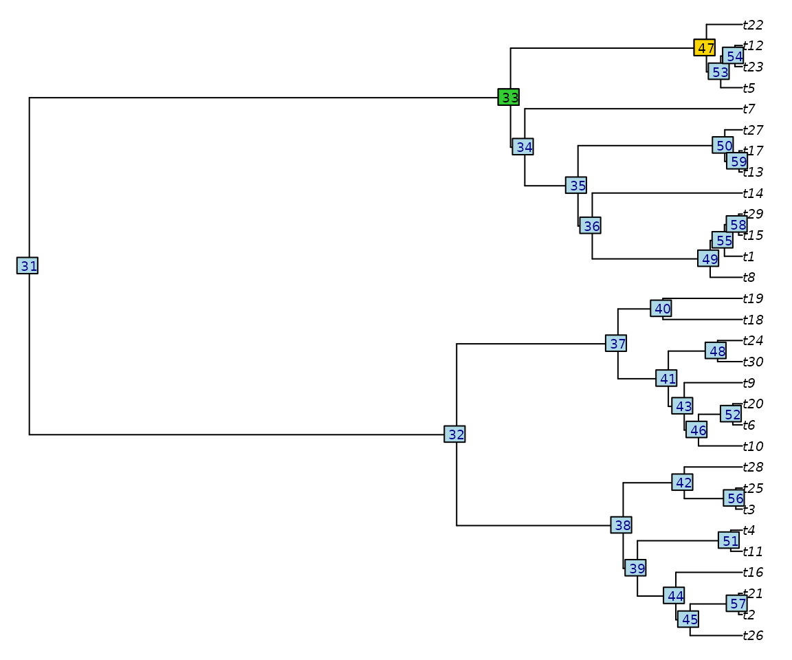
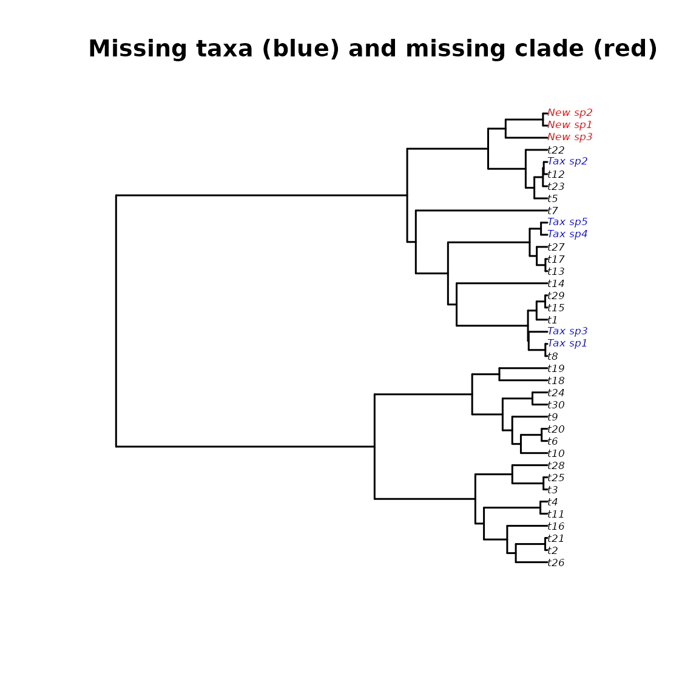
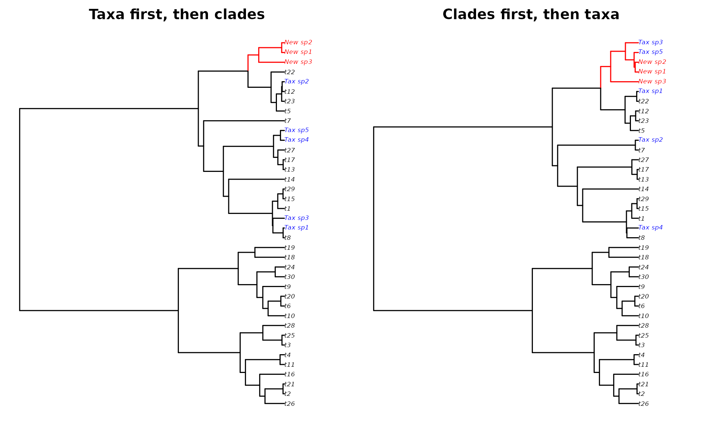
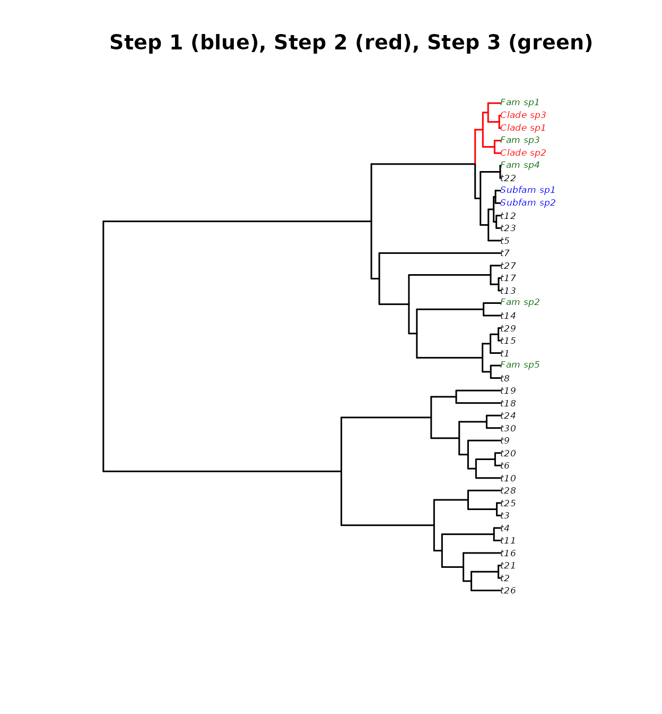

Graft both missing taxa and missing clades in one run
Maël Doré
2026-11-27
Source:vignettes/combine_missing_taxa_and_clades.Rmd
combine_missing_taxa_and_clades.RmdMissing lineages come in two types: missing taxa,
grafted within target clades with graft_missing_taxa(), and
missing clades, grafted as sisters of clades of the
backbone with graft_missing_clades() (see
vignette("graft_missing_taxa") and
vignette("graft_missing_clades")).
When your data include both types, they must be
grafted one after the other, each type being grafted on
the phylogeny produced by the previous step: this is a
successive grafting. This tutorial explains how to do
it, with the wrapper graft_missing_taxa_and_clades() or
manually with the individual functions:
-
Graft both types in one run with
graft_missing_taxa_and_clades(). - The order of the grafting steps: why grafting missing taxa first, then missing clades, is the default.
- Successive graftings by hand, to chain any number of steps, with a three-step example.
Arguments not covered here
The parameters of the grafting functions (method,
min_tips, include_target_clade_stem,
allowed_states, …) work as in the dedicated tutorials, and
are not explained again here.
- for the arguments of
graft_missing_taxa(): seevignette("graft_missing_taxa"); - for the arguments of
graft_missing_clades(): seevignette("graft_missing_clades");
Other arguments are explained in dedicated tutorials:
-
seed,nb_simulations,force_simulations, and the use of several stochastic maps, to handle uncertainty and ensure the reproducibility of the runs with the seed system: seevignette("handle_uncertainty"); -
parallelcomputation to speed up the process: seevignette("parallel_grafting"); -
save_temp,resumeand the other arguments used to save temporary files and resume interrupted runs: seevignette("resume_run"); -
treat_states_as_ranges, and the stochastic maps of several traits used together: seevignette("biogeographic_data")andvignette("multiple_traits").
0/ Setup
We use the toy backbone, and helper functions that
build the lists of missing taxa and missing clades to graft, and plot
the results. Two clades of the backbone are used below:
Family_B (node 33) and Subfam_B2
(node 47), nested within Family_B.
data(toy_backbone)
# Plot the backbone with its node IDs, and the clades used below: Family_B in limegreen, Subfam_B2 in gold
ape::plot.phylo(toy_backbone, cex = 0.6, no.margin = TRUE)
ape::nodelabels(cex = 0.6, frame = "rect", bg = "lightblue", col = "darkblue")
ape::nodelabels(node = 33, cex = 0.6, frame = "rect", bg = "limegreen", col = "black")
ape::nodelabels(node = 47, cex = 0.6, frame = "rect", bg = "gold", col = "black")
# Helper 1: build a missing_taxa_list with n taxa to graft within a target clade, defined by tips
make_taxa_list <- function(n, target_tips, prefix = "Tax_sp", start = 1)
{
taxa <- paste0(prefix, seq(start, length.out = n))
list(Taxon_name = taxa, Target_clade = setNames(rep(list(target_tips), n), taxa))
}
# Helper 2: build a missing_taxa_list with n taxa to graft as one missing clade,
# sister to a clade defined by tips
make_clade_list <- function(n, sister_tips, prefix = "New_sp", start = 1)
{
taxa <- paste0(prefix, seq(start, length.out = n))
list(Taxon_name = taxa, Sister_clade = setNames(rep(list(sister_tips), n), taxa))
}
# Helper 3: plot a grafted phylogeny, with the taxa of each grafting step in a different color
# Optionally, the branches of the missing clade (the subtree descending from the MRCA of its taxa)
# are drawn in red
plot_steps <- function(phy, steps, colors, main, clade_taxa = NULL)
{
tip_colors <- rep("black", ape::Ntip(phy))
for (i in seq_along(steps)) tip_colors[phy$tip.label %in% steps[[i]]] <- colors[i]
edge_colors <- rep("black", nrow(phy$edge))
if (!is.null(clade_taxa))
{
clade_node <- ape::getMRCA(phy, clade_taxa)
clade_nodes <- c(clade_node, phytools::getDescendants(phy, clade_node))
edge_colors[phy$edge[, 2] %in% clade_nodes] <- "red"
}
ape::plot.phylo(phy, tip.color = tip_colors, edge.color = edge_colors, edge.width = 1.5,
cex = 0.55, no.margin = FALSE, main = main)
}1/ Graft both types in one run
To graft both types at once, you need to provide the lists of missing
taxa and of missing clades in a single list with two
elements: taxa (the list of missing taxa, with a
Target_clade item) and clades (the list of
missing clades, with a Sister_clade item). Lists built with
build_missing_taxa_list() or imported with
import_missing_taxa_list() already have this format when
they include both types (see
vignette("format_inputs")).
Here, we build them by hand: 5 taxa to graft within
Family_B, and a missing clade of 3 taxa, sister of
Subfam_B2, which is nested within
Family_B.
# ------ Graft missing taxa and missing clades in one run ------ #
# Step 1: Build the lists of missing taxa and missing clades
taxa_list <- make_taxa_list(n = 5, target_tips = c("t8", "t22"))
clades_list <- make_clade_list(n = 3, sister_tips = c("t22", "t5"))
missing_taxa_list <- list(taxa = taxa_list, clades = clades_list)
# Step 2: Graft both types using the default order for grafting steps: 1/ Missing taxa; 2/ Missing clades
# The rationale for the order of the steps is discussed in the Section 2
grafted <- graft_missing_taxa_and_clades(phy = toy_backbone, missing_taxa_list = missing_taxa_list,
seed = 24, verbose = FALSE)
# Step 3: Extract the grafting information: one table for each type
info <- extract_grafting_info(grafted, missing_taxa_list, phy_backbone = toy_backbone)
names(info)
#> [1] "taxa" "clades"
info$taxa[, c("Taxon_name", "parent_node", "parent_tips", "graft_age")]
#> Taxon_name parent_node parent_tips graft_age
#> 1 Tax_sp1 18 t8 0.2377292
#> 2 Tax_sp2 29 t12 0.4250171
#> 3 Tax_sp3 18 t8 2.1719197
#> 4 Tax_sp4 50 t13, t27 2.0546323
#> 5 Tax_sp5 50 t13, t27 2.0546323
info$clades[, c("Missing_clade", "Taxa", "parent_node", "graft_age", "crown_age")]
#> Missing_clade Taxa parent_node graft_age crown_age
#> 1 1 New_sp1, New_sp2, New_sp3 47 6.871162 4.842441
# Step 4: Plot the grafted phylogeny, with the missing taxa in blue, and the taxa of the missing clade in red
plot_steps(grafted, steps = list(taxa_list$Taxon_name, clades_list$Taxon_name), colors = c("blue", "red"),
main = "Missing taxa (blue) and missing clade (red)")
All the arguments of the individual functions are available in
graft_missing_taxa_and_clades(), and apply to both
steps: for instance, min_tips is used to fit the
diversification models of both types, and, if provided,
allowed_states constrains the taxa and the clades based on
the same simmap. Similarly, if provided to account for
unsampled species, the total_richness_per_clades input is a
list with the same two elements, taxa and
clades (see import_total_richness_per_clades()
and build_total_richness_per_clades()).
2/ The order of the grafting steps
The grafting_order argument sets which type is grafted
first: c("taxa", "clades") (the default), or
c("clades", "taxa"). Here, the missing clade is sister of
Subfam_B2, which is nested within Family_B,
the target clade of the missing taxa: missing taxa can
potentially be grafted anywhere within the missing clade, if
the missing clade is already in the phylogeny when they are grafted.
Here, we graft the same lists with the two grafting step orders, with
the same seed, to compare results (see
vignette("handle_uncertainty") for the seed system, which
makes the runs reproducible):
# ------ Order of the steps: taxa first vs clades first ------ #
# Graft with the default order: missing taxa first, then missing clades
grafted_taxa_first <- graft_missing_taxa_and_clades(phy = toy_backbone, missing_taxa_list = missing_taxa_list,
grafting_order = c("taxa", "clades"),
seed = 24, verbose = FALSE)
# Graft with the reverse order: missing clades first, then missing taxa
grafted_clades_first <- graft_missing_taxa_and_clades(phy = toy_backbone, missing_taxa_list = missing_taxa_list,
grafting_order = c("clades", "taxa"),
seed = 24, verbose = FALSE)
# Are the taxa of the missing clade still a monophyletic group?
ape::is.monophyletic(grafted_taxa_first, clades_list$Taxon_name)
#> [1] TRUE
ape::is.monophyletic(grafted_clades_first, clades_list$Taxon_name)
#> [1] FALSE
# Plot the phylogenies: the subtree of the missing clade is in red
par(mfrow = c(1, 2), mar = c(0.5, 0.5, 2, 0.5))
plot_steps(grafted_taxa_first, steps = list(taxa_list$Taxon_name, clades_list$Taxon_name),
colors = c("blue", "red"),
clade_taxa = clades_list$Taxon_name, main = "Taxa first, then clades")
plot_steps(grafted_clades_first, steps = list(taxa_list$Taxon_name, clades_list$Taxon_name),
colors = c("blue", "red"),
clade_taxa = clades_list$Taxon_name, main = "Clades first, then taxa")
When the missing clades are grafted first, the
missing taxa are grafted on a phylogeny that already contains them: some
taxa may land inside the missing clade (blue tips
within the red subtree on the right panel), which is then no
longer a monophyletic group of its own taxa. This is rarely
what you want: a missing clade is defined as a group of taxa that are
close relatives, and the taxa of the target clade are meant to be placed
among the backbone species, not among them. When the missing
taxa are grafted first, the missing clades are grafted last,
on the stem of their sister clade, and stay
monophyletic whatever the seed. This is why
c("taxa", "clades") is the default and the recommended
order.
Grafting the clades first is only useful if you want the taxa to be
able to fall in the missing clades, for instance to
consider that a missing clade is only a rough guess of a group of
relatives. In this case, use extract_grafting_info() to
check which clades are still monophyletic: the clades that are not are
returned with NA values, and a warning.
3/ Successive graftings by hand
graft_missing_taxa_and_clades() combines two
steps. For further refinements, you can run the
individual grafting functions one after the other, each
on the phylogeny produced by the previous one:
graft_missing_taxa() and
graft_missing_clades() accept an already grafted phylogeny
as phy, so you can chain any number of steps, in
any order.
Here is a three-step example:
- graft 2 missing taxa within
Subfam_B2; - graft a missing clade of 3 taxa as sister of
Subfam_B2(with the missing taxa of step 1 already in it to account for the full diversity of the sister clade); - graft 5 more missing taxa with more uncertain
placement within
Family_B, which can land both in the missing clade and inSubfam_B2.
The total richness is the same at each step for a given clade
(Subfam_B2 has 12 species, and Family_B 40),
and is defined for the target or
sister clades of each step.
# ------ Three successive graftings ------ #
# Clades defined by tips: Subfam_B2 and Family_B
subfam_b2 <- c("t22", "t5")
family_b <- c("t8", "t22")
# Lists of missing taxa and clades
taxa_1_list <- make_taxa_list(n = 2, target_tips = subfam_b2, prefix = "Subfam_sp")
clade_2_list <- make_clade_list(n = 3, sister_tips = subfam_b2, prefix = "Clade_sp")
taxa_3_list <- make_taxa_list(n = 5, target_tips = family_b, prefix = "Fam_sp")
# Total richness of the clades used at each step
richness_1 <- list(Target_clade = list(subfam_b2), total_richness = 12)
richness_2 <- list(Sister_clade = list(subfam_b2), total_richness = 12)
richness_3 <- list(Target_clade = list(family_b), total_richness = 40)
# Step 1: graft the taxa within Subfam_B2, on the backbone
grafted_1 <- graft_missing_taxa(phy = toy_backbone, missing_taxa_list = taxa_1_list,
total_richness_per_clades = richness_1, seed = 30, verbose = FALSE)
# Step 2: graft the missing clade as sister of Subfam_B2, on the output of step 1
grafted_2 <- graft_missing_clades(phy = grafted_1, missing_taxa_list = clade_2_list,
total_richness_per_clades = richness_2, seed = 30, verbose = FALSE)
# Step 3: graft the taxa within Family_B, on the output of step 2
grafted_3 <- graft_missing_taxa(phy = grafted_2, missing_taxa_list = taxa_3_list,
total_richness_per_clades = richness_3, seed = 30, verbose = FALSE)
# Plot the final phylogeny, with the taxa of each step in a different color
# and the subtree of the missing clade in red
plot_steps(grafted_3, steps = list(taxa_1_list$Taxon_name,
clade_2_list$Taxon_name,
taxa_3_list$Taxon_name),
colors = c("blue", "red", "darkgreen"), clade_taxa = clade_2_list$Taxon_name,
main = "Step 1 (blue), Step 2 (red), Step 3 (green)")
Because the output of each step is a standard grafted phylogeny, the steps can be chained in any order, and for any number of times until you reach your targeted grafted phylogeny comprising all lineages to graft.
Why use tips instead of node IDs to define clades?
Clades of missing_taxa_list and
total_richness_per_clades are defined by
tips, not by node IDs, because node IDs
change every time taxa are grafted, while the tips of a
clade do not. Here, Subfam_B2 is the node
47 of the backbone, but it is not the same node in the
phylogenies produced by each step:
# Node ID of Subfam_B2 in the backbone, and after each step
c(Backbone = ape::getMRCA(toy_backbone, subfam_b2),
Step_1 = ape::getMRCA(grafted_1, subfam_b2),
Step_2 = ape::getMRCA(grafted_2, subfam_b2),
Step_3 = ape::getMRCA(grafted_3, subfam_b2))
#> Backbone Step_1 Step_2 Step_3
#> 47 59 63 70Clades defined by their tips stay valid at each step: the same
subfam_b2 identifies Subfam_B2 in the four
phylogenies. If you define clades with node IDs, convert them to tips
with convert_nodes_to_tips() on the
backbone, before grafting (see
vignette("format_inputs")).
Next steps
Now that you know how to proceed with successive graftings, you may be interested in exploring options for:
- grafting only missing taxa within target clades:
vignette("graft_missing_taxa"); - grafting only missing clades as sisters of clades
of the backbone:
vignette("graft_missing_clades"); - handling uncertainty with several simulations and
stochastic maps, and ensuring the reproducibility of
the runs with the seed system:
vignette("handle_uncertainty"); - speeding up your runs by using parallel
computation:
vignette("parallel_grafting"); -
resuming interrupted runs:
vignette("resume_run").